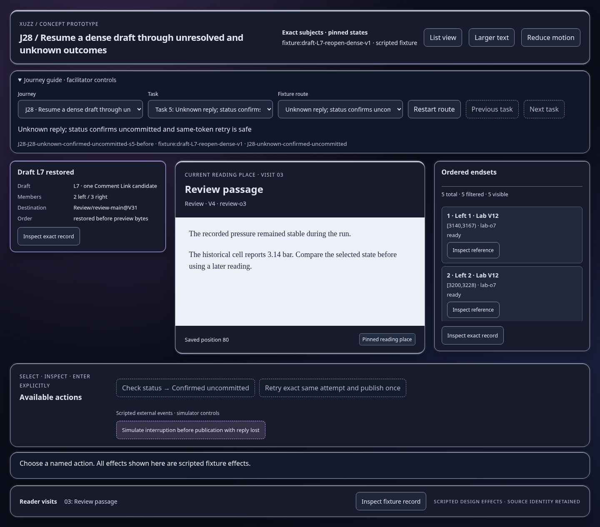
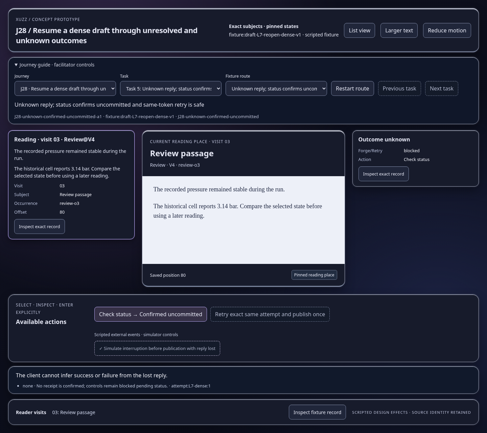
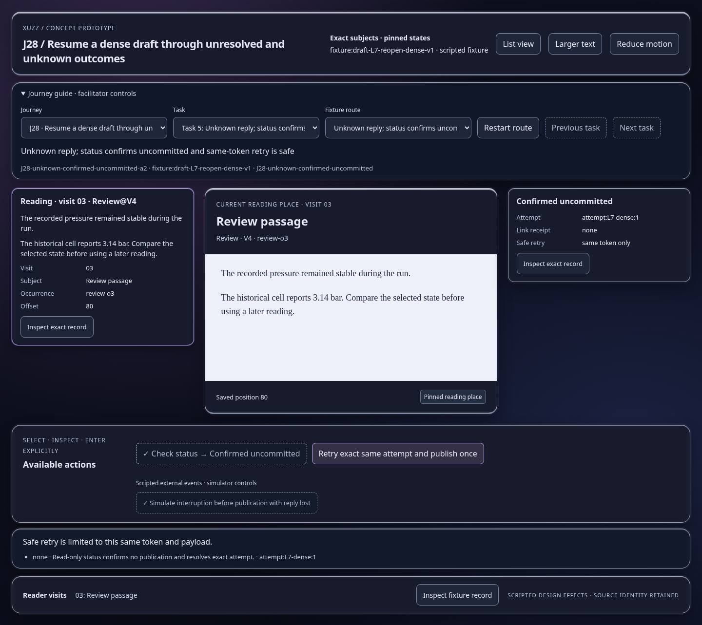
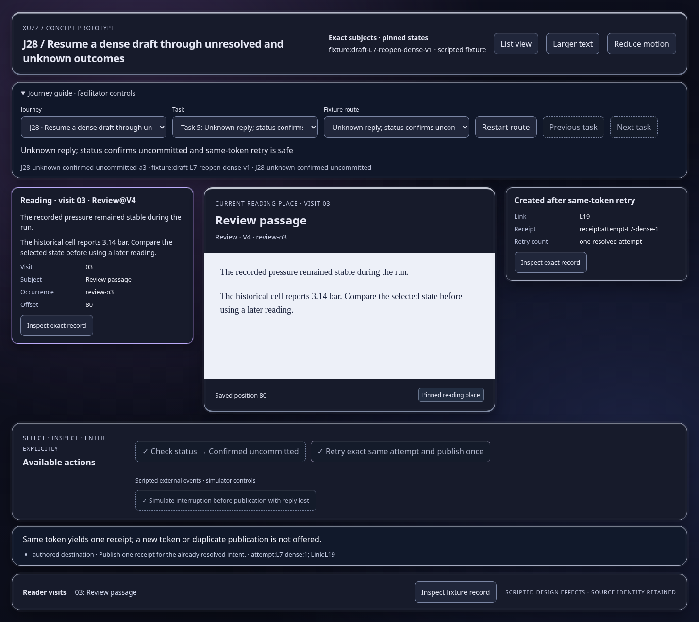

Scripted concept states; inspect the effect and identity trace. Images show actual prototype rendering.

The client cannot infer success or failure from the lost reply.
Open this represented state
Safe retry is limited to this same token and payload.
Open this represented state
Same token yields one receipt; a new token or duplicate publication is not offered.
Open this represented state